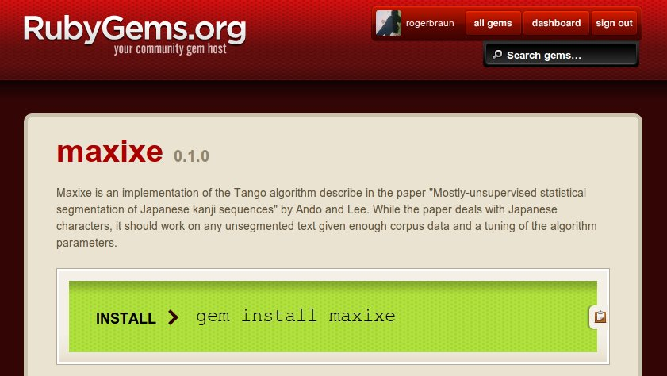
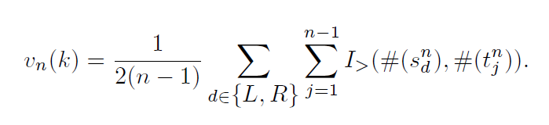

Maxixe
A universal segmenter for search applications
Roger Braun
rogerbraun.net
What is Maxixe?
Several things!
A gemstone
A Rubygem

Problem: Searching a text
- Full crawl every time - slow!
- Build an index and search it - fast!
New Problem: Building an index
- Go through all the words, save the position in index
- Easy!
- "I like dogs that like me" =>
[["I", 1],["like", 2,5], ...]
A japanese index?
- Hard!
- 日本語処理能力
- Where are the word boundaries?
Segmenting japanese
Lots of work!
- Build a grammar...
- Build a dictionary...
- Build a segmented corpus...
Why not to use them
- Complicated!
- External dependencies!
- Inflexible!
- More than we need!
A simpler way
Mostly-Unsupervised Statistical Segmentation of Japanese Kanji Sequences, Ando + Lee.
Really simple!

Okay, not that simple
The TANGO algorithm
Key ideas
- Grab some characters: probably a word
- Or at least part of it
- Count all your combinations of characters
- Look if a given position is a probable word boundary by counting straddling vs. non-straddling combinations
More technical
Training
For a set N={2..i} take all n-grams, where n is in N, of a large corpus and count their occurences.
Segmenting
For every possible word boundary: Take the straddling and non-straddling n-grams. If there are more non-straddling n-grams, we probably are at a word boundary.
Split on local maxima, or when a certain threshold is reached.
What's good?
- Segmented text
- Training corpus can be unsegmented!
- Really flexible: Can learn from input data
- Universal! Works with any language!
What's bad?
- No morphological data
- Two magic parameters: t and N
Example Usage
Corpus (dogs.txt)
ILIKEMYDOG
THISHOUSEISMYHOUSE
MYDOGISSONICE
INMYHOUSETHEREAREFOURDOGS
IWANTAHOUSEFORMYDOG
Training
n_gram_count = Maxixe::Trainer.generate_training_data([3,4], "dogs.txt")
Example Usage
Segmenting
s = Maxixe::Segmenter.new(n_gram_count, 0.5)
s.segment "MYDOGISINTHEHOUSE"
=> "MY DOG IS IN THE HOUSE"
Optimizing your segmenter
- Remember N and t?
- You could just guess them... unpractical
- Maxixe does the guessing for you!
Optimizer Usage
pre_segmented =
[["MYDOGISINTHEHOUSE", "MY DOG IS IN THE HOUSE"],
["FOURNICEDOGS", "FOUR NICE DOGS"],
["MYCATLIKESMYDOG", "MY CAT LIKES MY DOG"]]
n_gram_count =
Maxixe::Trainer.generate_corpus_from_io(
[2,3,4,5],
open("dogs.txt")
best =
Maxixe::Trainer.optimize(
n_gram_count,
pre_segmented)
Results
"Best" now contains:
{:score => 0, :t => 0.5, :n => ["2","4"]}
What does this do?
- Try out all combinations of N and t
- Calculate score by Levenshtein distance
- Lowest score with fewest n-grams wins
Wrapping up: When to use Maxixe
- You have a corpus, you want easy, fast segmenting
- You care mostly about tokenizing
- You don't care about morphological data
- You don't care about traditional grammar
- You have a very dynamic search space (e.g. new words, netspeak, common errors)
Try it out!
THANK YOU
@rogerbraun // rogerbraun.net // github.com/rogerbraun
[any material that should appear in print but not on the slide]